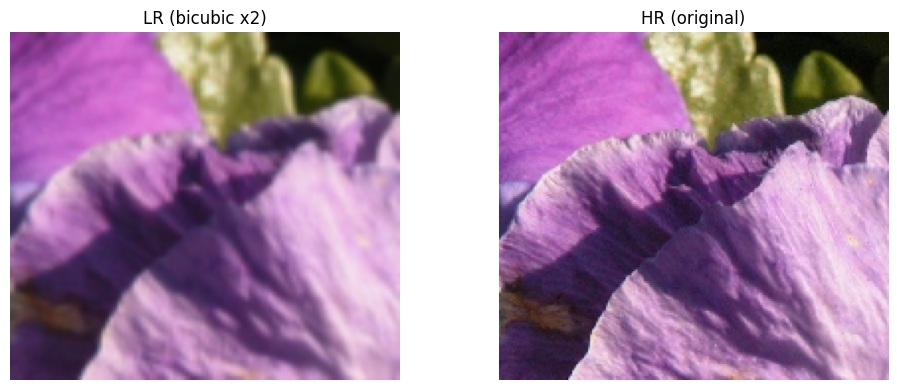
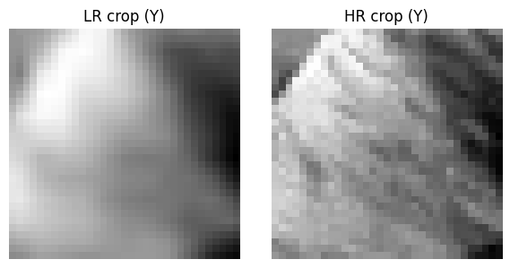
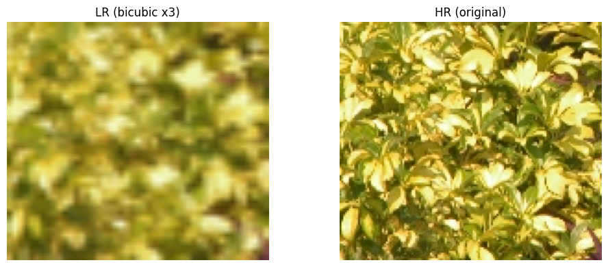
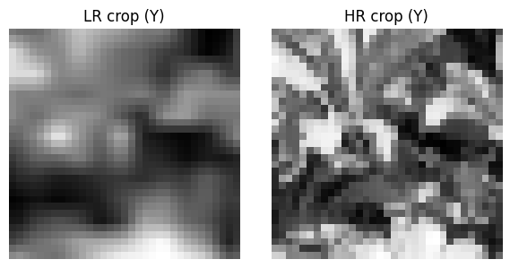
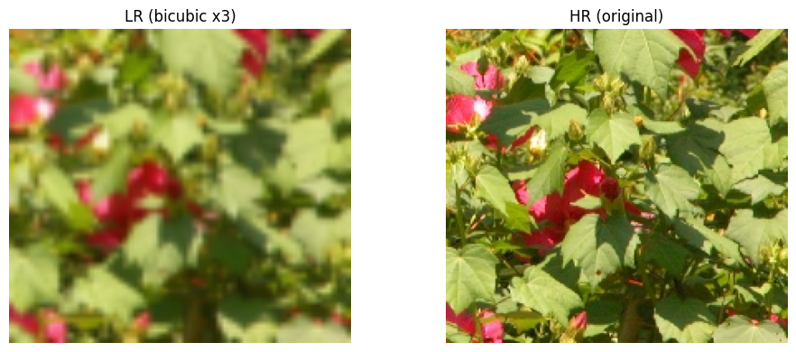
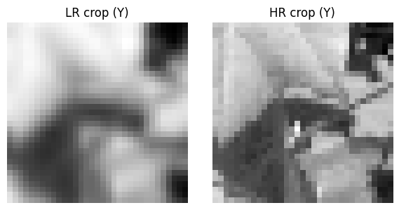
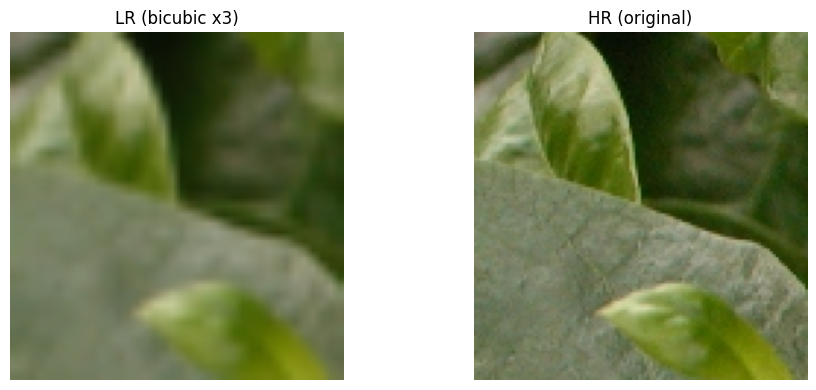
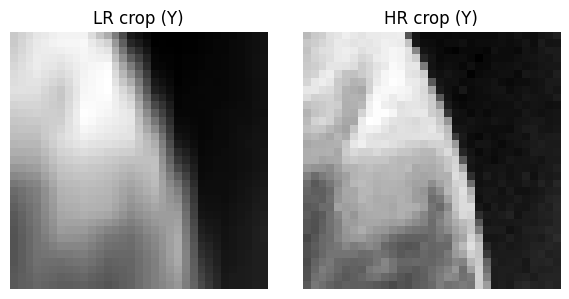
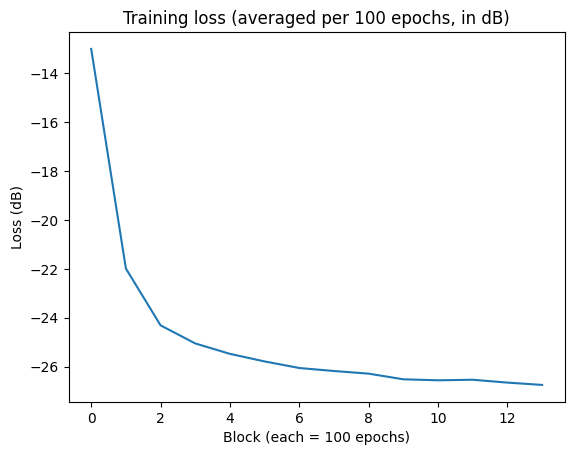
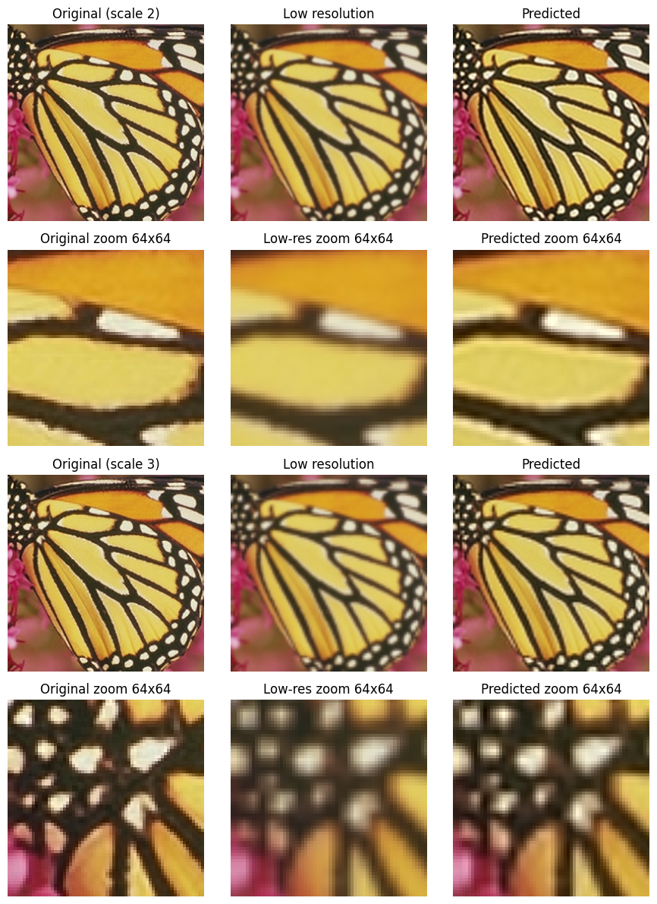

from PIL import Image
import numpy as np
import random
import matplotlib.pyplot as plt
import os
import glob
import random
from typing import List
import torch
from torch.utils.data import Dataset, DataLoader
import torch.nn as nn
from datasets import load_dataset
from skimage.metrics import peak_signal_noise_ratio, structural_similarity
device = torch.device("cuda" if torch.cuda.is_available() else "cpu")
CROP_SIZE = 33
lr = 1e-5
num_epochs = 3500
batch_size = 32/Users/stefansrjakovferi/Library/Python/3.9/lib/python/site-packages/tqdm/auto.py:21: TqdmWarning: IProgress not found. Please update jupyter and ipywidgets. See https://ipywidgets.readthedocs.io/en/stable/user_install.html
from .autonotebook import tqdm as notebook_tqdm
/Users/stefansrjakovferi/Library/Python/3.9/lib/python/site-packages/urllib3/__init__.py:35: NotOpenSSLWarning: urllib3 v2 only supports OpenSSL 1.1.1+, currently the 'ssl' module is compiled with 'LibreSSL 2.8.3'. See: https://github.com/urllib3/urllib3/issues/3020
warnings.warn(
class OnFlyDataset(Dataset):
def __init__(self, root_dir: str, scale: int = None):
self.root_dir = root_dir
self.scale = scale
exts = ("*.png",)
image_paths: List[str] = []
for ext in exts:
image_paths.extend(glob.glob(os.path.join(root_dir, ext)))
self.image_paths = sorted(image_paths)
if len(self.image_paths) == 0:
raise RuntimeError(f"No images found in {root_dir}")
def __len__(self):
return len(self.image_paths)
def __getitem__(self, idx: int):
scale = self.scale if self.scale is not None else random.choice([2, 3])
path = self.image_paths[idx]
hr_img = Image.open(path).convert("RGB")
lr_img = make_low_resolution(hr_img, scale)
hr_y = rgb_to_y(hr_img)
lr_y = rgb_to_y(lr_img)
lr_crop, hr_crop = random_crop_pair(lr_y, hr_y, crop_size=CROP_SIZE)
lr_tensor = torch.from_numpy(lr_crop).unsqueeze(0) / 255.0
hr_tensor = torch.from_numpy(hr_crop).unsqueeze(0) / 255.0
return lr_tensor, hr_tensortest_dataset = OnFlyDataset(root_dir="./T91", scale=None)
visualize_dataset_sample(test_dataset, idx=0)
visualize_dataset_sample(test_dataset, idx=1)
visualize_dataset_sample(test_dataset, idx=2)
visualize_dataset_sample(test_dataset, idx=3)







dataset = OnFlyDataset("./T91")
widths = []
heights = []
for file in os.listdir("./T91"):
if file.lower().endswith((".png", ".jpg", ".jpeg", ".bmp")):
img = Image.open(os.path.join("./T91", file))
w, h = img.size
widths.append(w)
heights.append(h)
print("Število slik:", len(widths))
print("Povprečna širina:", np.mean(widths))
print("Povprečna višina:", np.mean(heights))Število slik: 91
Povprečna širina: 264.1208791208791
Povprečna višina: 203.58241758241758
class SuperResolutionSRCNN(nn.Module):
def __init__(self):
super().__init__()
self.conv1 = nn.Conv2d(1, 64, kernel_size=9, padding=4)
self.relu1 = nn.ReLU(inplace=True)
self.conv2 = nn.Conv2d(64, 32, kernel_size=5, padding=2)
self.relu2 = nn.ReLU(inplace=True)
self.conv3 = nn.Conv2d(32, 1, kernel_size=5, padding=2)
def forward(self, x):
x = self.relu1(self.conv1(x))
x = self.relu2(self.conv2(x))
x = self.conv3(x)
return x
model = SuperResolutionSRCNN().to(device)
print(model)SuperResolutionSRCNN(
(conv1): Conv2d(1, 64, kernel_size=(9, 9), stride=(1, 1), padding=(4, 4))
(relu1): ReLU(inplace=True)
(conv2): Conv2d(64, 32, kernel_size=(5, 5), stride=(1, 1), padding=(2, 2))
(relu2): ReLU(inplace=True)
(conv3): Conv2d(32, 1, kernel_size=(5, 5), stride=(1, 1), padding=(2, 2))
)
loader = DataLoader(dataset, batch_size=batch_size, shuffle=True, drop_last=True, num_workers = 4, pin_memory=True )
criterion = nn.MSELoss()
optimizer = torch.optim.Adam(model.parameters(), lr=lr)
epoch_losses = []
counter = 0
for epoch in range(num_epochs):
model.train()
for lr_batch, hr_batch in loader:
lr_batch = lr_batch.to(device)
hr_batch = hr_batch.to(device)
optimizer.zero_grad()
pred = model(lr_batch)
loss = criterion(pred, hr_batch)
loss.backward()
optimizer.step()
epoch_losses.append(loss.item())
if counter % 100 == 0:
print(f"Epoch {epoch+1}/{num_epochs} - loss: {loss.item():.6f}")
counter += 1Epoch 1/3500 - loss: 0.270090
Epoch 51/3500 - loss: 0.045234
Epoch 101/3500 - loss: 0.021178
Epoch 151/3500 - loss: 0.019619
Exception ignored in: <function _MultiProcessingDataLoaderIter.__del__ at 0x7c3ec2d01da0>
Exception ignored in: <function _MultiProcessingDataLoaderIter.__del__ at 0x7c3ec2d01da0>
Traceback (most recent call last):
File "/usr/local/lib/python3.12/dist-packages/torch/utils/data/dataloader.py", line 1654, in __del__
self._shutdown_workers()
File "/usr/local/lib/python3.12/dist-packages/torch/utils/data/dataloader.py", line 1600, in _shutdown_workers
self._pin_memory_thread.join()
File "/usr/lib/python3.12/threading.py", line 1146, in join
raise RuntimeError("cannot join current thread")
RuntimeError: cannot join current thread
Traceback (most recent call last):
File "/usr/local/lib/python3.12/dist-packages/torch/utils/data/dataloader.py", line 1654, in __del__
self._shutdown_workers()
File "/usr/local/lib/python3.12/dist-packages/torch/utils/data/dataloader.py", line 1637, in _shutdown_workers
if w.is_alive():
^^^^^^^^^^^^
File "/usr/lib/python3.12/multiprocessing/process.py", line 160, in is_alive
assert self._parent_pid == os.getpid(), 'can only test a child process'
^^^^^^^^^^^^^^^^^^^^^^^^^^^^^^^
AssertionError: can only test a child process
Traceback (most recent call last):
File "/usr/lib/python3.12/multiprocessing/queues.py", line 259, in _feed
reader_close()
File "/usr/lib/python3.12/multiprocessing/connection.py", line 178, in close
self._close()
File "/usr/lib/python3.12/multiprocessing/connection.py", line 377, in _close
_close(self._handle)
OSError: [Errno 9] Bad file descriptor
Epoch 201/3500 - loss: 0.012320
Epoch 251/3500 - loss: 0.009937
Epoch 301/3500 - loss: 0.007731
Epoch 351/3500 - loss: 0.007584
Epoch 401/3500 - loss: 0.005411
Epoch 451/3500 - loss: 0.004751
Epoch 501/3500 - loss: 0.003457
Epoch 551/3500 - loss: 0.003064
Epoch 601/3500 - loss: 0.003769
Epoch 651/3500 - loss: 0.004208
Epoch 701/3500 - loss: 0.003934
Epoch 751/3500 - loss: 0.003435
Epoch 801/3500 - loss: 0.003504
Epoch 851/3500 - loss: 0.002931
Epoch 901/3500 - loss: 0.003222
Epoch 951/3500 - loss: 0.003219
Epoch 1001/3500 - loss: 0.002272
Epoch 1051/3500 - loss: 0.002832
Epoch 1101/3500 - loss: 0.002691
Epoch 1151/3500 - loss: 0.002863
Epoch 1201/3500 - loss: 0.003214
Epoch 1251/3500 - loss: 0.002079
Epoch 1301/3500 - loss: 0.002379
Epoch 1351/3500 - loss: 0.002449
Epoch 1401/3500 - loss: 0.002154
Epoch 1451/3500 - loss: 0.001985
Epoch 1501/3500 - loss: 0.002973
Epoch 1551/3500 - loss: 0.003060
Epoch 1601/3500 - loss: 0.002389
Epoch 1651/3500 - loss: 0.003385
Epoch 1701/3500 - loss: 0.001614
Epoch 1751/3500 - loss: 0.003157
Epoch 1801/3500 - loss: 0.002556
Epoch 1851/3500 - loss: 0.002086
Epoch 1901/3500 - loss: 0.002541
Epoch 1951/3500 - loss: 0.002385
Epoch 2001/3500 - loss: 0.001716
Epoch 2051/3500 - loss: 0.002513
Epoch 2101/3500 - loss: 0.002594
Epoch 2151/3500 - loss: 0.002478
Epoch 2201/3500 - loss: 0.002323
Epoch 2251/3500 - loss: 0.002128
Epoch 2301/3500 - loss: 0.002672
Epoch 2351/3500 - loss: 0.002684
Epoch 2401/3500 - loss: 0.001776
Epoch 2451/3500 - loss: 0.001611
Epoch 2501/3500 - loss: 0.001747
Epoch 2551/3500 - loss: 0.002094
Epoch 2601/3500 - loss: 0.002343
Epoch 2651/3500 - loss: 0.002489
Epoch 2701/3500 - loss: 0.002696
Epoch 2751/3500 - loss: 0.003615
Epoch 2801/3500 - loss: 0.002624
Epoch 2851/3500 - loss: 0.001969
Epoch 2901/3500 - loss: 0.002804
Epoch 2951/3500 - loss: 0.002235
Epoch 3001/3500 - loss: 0.002264
Epoch 3051/3500 - loss: 0.002782
Epoch 3101/3500 - loss: 0.001919
Epoch 3151/3500 - loss: 0.002318
Epoch 3201/3500 - loss: 0.002107
Epoch 3251/3500 - loss: 0.001944
Epoch 3301/3500 - loss: 0.002252
Epoch 3351/3500 - loss: 0.001958
Epoch 3401/3500 - loss: 0.002224
Epoch 3451/3500 - loss: 0.002173
epoch_losses = np.array(epoch_losses)
N = 500
trim = len(epoch_losses) // N * N
loss_avg = epoch_losses[:trim].reshape(-1, N).mean(axis=1)
eps = 1e-12
loss_db = 10 * np.log10(loss_avg + eps)
plt.plot(loss_db)
plt.xlabel("Block (each = 100 epochs)")
plt.ylabel("Loss (dB)")
plt.title("Training loss (averaged per 100 epochs, in dB)")
plt.show()
state = torch.load("super_resolution_model.pth", map_location=device)
model.load_state_dict(state)
model.eval()SuperResolutionSRCNN(
(conv1): Conv2d(1, 64, kernel_size=(9, 9), stride=(1, 1), padding=(4, 4))
(relu1): ReLU(inplace=True)
(conv2): Conv2d(64, 32, kernel_size=(5, 5), stride=(1, 1), padding=(2, 2))
(relu2): ReLU(inplace=True)
(conv3): Conv2d(32, 1, kernel_size=(5, 5), stride=(1, 1), padding=(2, 2))
)ds = load_dataset("Voxel51/Set5", split="train"){"model_id":"226cfdbba3e74fb7865ca1e3f1b03b24","version_major":2,"version_minor":0}if len(ds) == 0:
raise RuntimeError("No images in dataset")
sample = random.choice(ds)
hr_img_rgb = sample["image"].convert("RGB")
model.eval()
scales = [2, 3]
fig, axes = plt.subplots(len(scales) * 2, 3, figsize=(9, 6 * len(scales)))
if len(scales) * 2 == 2:
axes = np.array(axes).reshape(2, 3)
for i, scale in enumerate(scales):
lr_img_rgb = make_low_resolution(hr_img_rgb, scale)
hr_y = rgb_to_y(hr_img_rgb) / 255.0
lr_y = rgb_to_y(lr_img_rgb) / 255.0
lr_tensor = torch.from_numpy(lr_y).unsqueeze(0).unsqueeze(0).to(device)
with torch.no_grad():
pred_tensor = model(lr_tensor).clamp(0.0, 1.0)
pred_y = pred_tensor.squeeze().cpu().numpy()
mse = np.mean((hr_y - pred_y) ** 2)
print(f"Scale {scale}: MSE on Y = {mse:.6f}")
ycbcr_lr = lr_img_rgb.convert("YCbCr")
_, cb_lr, cr_lr = ycbcr_lr.split()
pred_y_255 = (pred_y * 255.0).clip(0, 255).astype(np.uint8)
pred_y_img = Image.fromarray(pred_y_255, mode="L")
pred_ycbcr_img = Image.merge("YCbCr", (pred_y_img, cb_lr, cr_lr))
pred_rgb_img = pred_ycbcr_img.convert("RGB")
row_full = 2 * i
row_zoom = 2 * i + 1
axes[row_full, 0].imshow(hr_img_rgb)
axes[row_full, 0].set_title(f"Original (scale {scale})")
axes[row_full, 0].axis("off")
axes[row_full, 1].imshow(lr_img_rgb)
axes[row_full, 1].set_title("Low resolution")
axes[row_full, 1].axis("off")
axes[row_full, 2].imshow(pred_rgb_img)
axes[row_full, 2].set_title("Predicted")
axes[row_full, 2].axis("off")
w, h = hr_img_rgb.size
crop_w, crop_h = 64, 64
if w < crop_w or h < crop_h:
x0, y0 = 0, 0
else:
x0 = random.randint(0, w - crop_w)
y0 = random.randint(0, h - crop_h)
box = (x0, y0, x0 + crop_w, y0 + crop_h)
hr_crop = hr_img_rgb.crop(box)
lr_crop = lr_img_rgb.crop(box)
pred_crop = pred_rgb_img.crop(box)
axes[row_zoom, 0].imshow(hr_crop)
axes[row_zoom, 0].set_title("Original zoom 64x64")
axes[row_zoom, 0].axis("off")
axes[row_zoom, 1].imshow(lr_crop)
axes[row_zoom, 1].set_title("Low-res zoom 64x64")
axes[row_zoom, 1].axis("off")
axes[row_zoom, 2].imshow(pred_crop)
axes[row_zoom, 2].set_title("Predicted zoom 64x64")
axes[row_zoom, 2].axis("off")
plt.tight_layout()
plt.show()Scale 2: MSE on Y = 0.001670
Scale 3: MSE on Y = 0.003983
/tmp/ipython-input-2210396050.py:47: DeprecationWarning: 'mode' parameter is deprecated and will be removed in Pillow 13 (2026-10-15)
pred_y_img = Image.fromarray(pred_y_255, mode="L")
Exception in thread QueueFeederThread:
Traceback (most recent call last):
File "/usr/lib/python3.12/multiprocessing/queues.py", line 259, in _feed
Exception in thread QueueFeederThread:
Traceback (most recent call last):
File "/usr/lib/python3.12/multiprocessing/queues.py", line 259, in _feed
reader_close()
File "/usr/lib/python3.12/multiprocessing/connection.py", line 178, in close
reader_close()
File "/usr/lib/python3.12/multiprocessing/connection.py", line 178, in close
self._close()
File "/usr/lib/python3.12/multiprocessing/connection.py", line 377, in _close
_close(self._handle)
OSError: [Errno 9] Bad file descriptor
During handling of the above exception, another exception occurred:
Traceback (most recent call last):
File "/usr/lib/python3.12/threading.py", line 1075, in _bootstrap_inner
self._close()
File "/usr/lib/python3.12/multiprocessing/connection.py", line 377, in _close
_close(self._handle)
OSError: [Errno 9] Bad file descriptor
During handling of the above exception, another exception occurred:
Traceback (most recent call last):
File "/usr/lib/python3.12/threading.py", line 1075, in _bootstrap_inner
self.run()
File "/usr/lib/python3.12/threading.py", line 1012, in run
self.run()
File "/usr/lib/python3.12/threading.py", line 1012, in run
self._target(*self._args, **self._kwargs)
File "/usr/lib/python3.12/multiprocessing/queues.py", line 291, in _feed
self._target(*self._args, **self._kwargs)
File "/usr/lib/python3.12/multiprocessing/queues.py", line 291, in _feed
queue_sem.release()
ValueError: semaphore or lock released too many times
queue_sem.release()
ValueError: semaphore or lock released too many times

def evaluate_dataset_on_scale(dataset_name: str, scale: int):
ds = load_dataset(dataset_name, split="train")
psnr_lr_list = []
ssim_lr_list = []
psnr_pred_list = []
ssim_pred_list = []
for sample in ds:
img = sample["image"]
if not isinstance(img, Image.Image):
img = Image.fromarray(img)
hr_img_rgb = img.convert("RGB")
lr_img_rgb = make_low_resolution(hr_img_rgb, scale)
hr_y = rgb_to_y(hr_img_rgb) / 255.0
lr_y = rgb_to_y(lr_img_rgb) / 255.0
lr_tensor = torch.from_numpy(lr_y).unsqueeze(0).unsqueeze(0).to(device)
with torch.no_grad():
pred_tensor = model(lr_tensor).clamp(0.0, 1.0)
pred_y = pred_tensor.squeeze().cpu().numpy()
psnr_lr = peak_signal_noise_ratio(hr_y, lr_y, data_range=1.0)
ssim_lr = structural_similarity(hr_y, lr_y, data_range=1.0)
psnr_pred = peak_signal_noise_ratio(hr_y, pred_y, data_range=1.0)
ssim_pred = structural_similarity(hr_y, pred_y, data_range=1.0)
psnr_lr_list.append(psnr_lr)
ssim_lr_list.append(ssim_lr)
psnr_pred_list.append(psnr_pred)
ssim_pred_list.append(ssim_pred)
print(f"\nDataset: {dataset_name}, scale = {scale}")
print(" Original vs LowRes:")
print(" PSNR [dB] mean = {:.2f}, std = {:.2f}".format(
np.mean(psnr_lr_list), np.std(psnr_lr_list)))
print(" SSIM [-] mean = {:.4f}, std = {:.4f}".format(
np.mean(ssim_lr_list), np.std(ssim_lr_list)))
print(" Original vs Predicted:")
print(" PSNR [dB] mean = {:.2f}, std = {:.2f}".format(
np.mean(psnr_pred_list), np.std(psnr_pred_list)))
print(" SSIM [-] mean = {:.4f}, std = {:.4f}".format(
np.mean(ssim_pred_list), np.std(ssim_pred_list)))print('Evaluate Set5 with scale 2')
evaluate_dataset_on_scale("Voxel51/Set5", scale=2)
print('Evaluate Set14 with scale 2')
evaluate_dataset_on_scale("Voxel51/Set14", scale=2)
print('Evaluate Set5 with scale 3')
evaluate_dataset_on_scale("Voxel51/Set5", scale=3)
print('Evaluate Set14 with scale 3')
evaluate_dataset_on_scale("Voxel51/Set14", scale=3)Evaluate Set5 with scale 2
{"model_id":"e54e8a960e594d52840bf2a3bded00f9","version_major":2,"version_minor":0}
Dataset: Voxel51/Set5, scale = 2
Original vs LowRes:
PSNR [dB] mean = 32.25, std = 5.40
SSIM [-] mean = 0.9299, std = 0.0564
Original vs Predicted:
PSNR [dB] mean = 35.09, std = 5.71
SSIM [-] mean = 0.9533, std = 0.0392
Evaluate Set14 with scale 2
{"model_id":"343fac01c11d4184a36f395e0757b398","version_major":2,"version_minor":0}
Dataset: Voxel51/Set14, scale = 2
Original vs LowRes:
PSNR [dB] mean = 31.07, std = 4.69
SSIM [-] mean = 0.9064, std = 0.0773
Original vs Predicted:
PSNR [dB] mean = 34.15, std = 5.27
SSIM [-] mean = 0.9435, std = 0.0539
Evaluate Set5 with scale 3
{"model_id":"b9eb5362c7554bd592248668e67b2bf1","version_major":2,"version_minor":0}
Dataset: Voxel51/Set5, scale = 3
Original vs LowRes:
PSNR [dB] mean = 29.25, std = 5.09
SSIM [-] mean = 0.8744, std = 0.0862
Original vs Predicted:
PSNR [dB] mean = 32.50, std = 5.84
SSIM [-] mean = 0.9215, std = 0.0671
Evaluate Set14 with scale 3
{"model_id":"9397bb74f2e54d4d9f78770884c26a5f","version_major":2,"version_minor":0}
Dataset: Voxel51/Set14, scale = 3
Original vs LowRes:
PSNR [dB] mean = 28.29, std = 4.21
SSIM [-] mean = 0.8414, std = 0.1091
Original vs Predicted:
PSNR [dB] mean = 31.44, std = 5.52
SSIM [-] mean = 0.8982, std = 0.0907
def random_crop_pair(lr: np.ndarray, hr: np.ndarray, crop_size=33):
h, w = lr.shape
if h < crop_size or w < crop_size:
raise ValueError("Image too small for cropping.")
x = random.randint(0, w - crop_size)
y = random.randint(0, h - crop_size)
lr_crop = lr[y:y+crop_size, x:x+crop_size]
hr_crop = hr[y:y+crop_size, x:x+crop_size]
return lr_crop, hr_crop
def make_low_resolution(img: Image.Image, scale: int) -> Image.Image:
w, h = img.size
low_w = w // scale
low_h = h // scale
img_down = img.resize((low_w, low_h), Image.BILINEAR)
img_up = img_down.resize((w, h), Image.BILINEAR)
return img_up
def rgb_to_y(img: Image.Image) -> np.ndarray:
ycbcr = img.convert("YCbCr")
y, _, _ = ycbcr.split()
return np.array(y, dtype=np.float32)
def visualize_dataset_sample(dataset: OnFlyDataset, idx: int = 0):
img_path = dataset.image_paths[idx]
scale = random.choice([2, 3])
hr_rgb = Image.open(img_path).convert("RGB")
lr_rgb = make_low_resolution(hr_rgb, scale)
fig, axs = plt.subplots(1, 2, figsize=(10, 4))
axs[0].imshow(lr_rgb)
axs[0].set_title(f"LR (bicubic x{scale})")
axs[0].axis("off")
axs[1].imshow(hr_rgb)
axs[1].set_title("HR (original)")
axs[1].axis("off")
plt.tight_layout()
plt.show()
lr_tensor, hr_tensor = dataset[idx]
lr_crop = lr_tensor.squeeze(0).numpy()
hr_crop = hr_tensor.squeeze(0).numpy()
fig, axs = plt.subplots(1, 2, figsize=(6, 3))
axs[0].imshow(lr_crop, cmap="gray")
axs[0].set_title("LR crop (Y)")
axs[0].axis("off")
axs[1].imshow(hr_crop, cmap="gray")
axs[1].set_title("HR crop (Y)")
axs[1].axis("off")
plt.tight_layout()
plt.show()